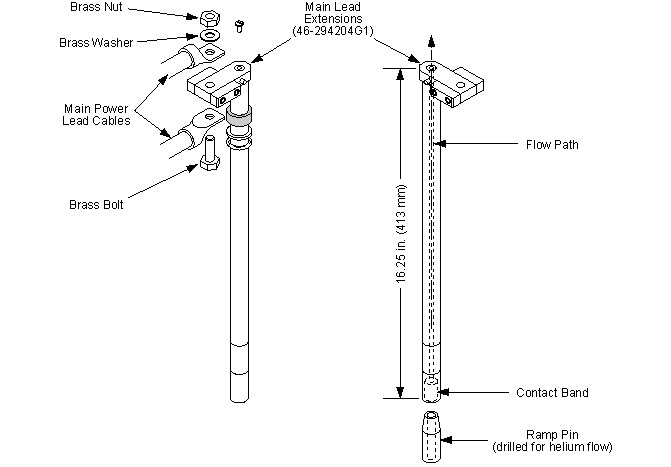

| NOTE: | Only use brass washers when connecting Main Leads to the
Main Lead Extensions to keep voltage drop to a minimum. Main Lead connections for Flexible Main Lead Extensions 2287029 are made after lead insertion in Step 12. |
Illustration 6: Hardware Mounting on Fixed Main Lead Extensions 46-294204G1
